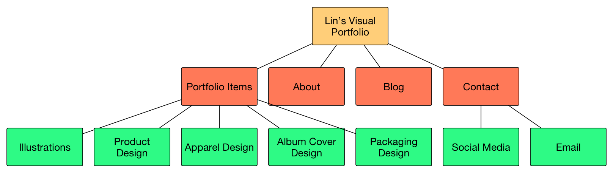
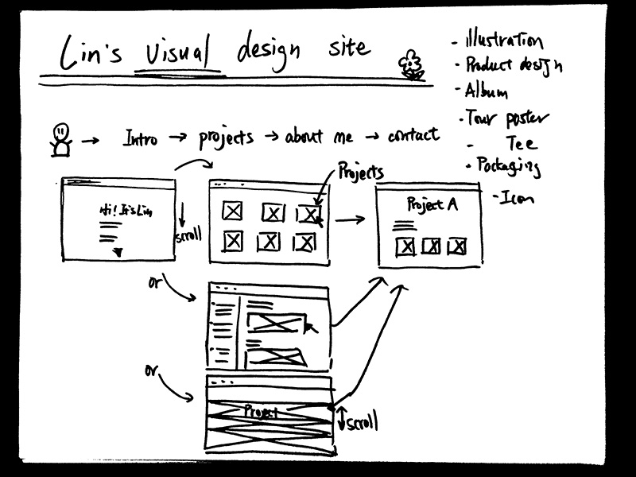
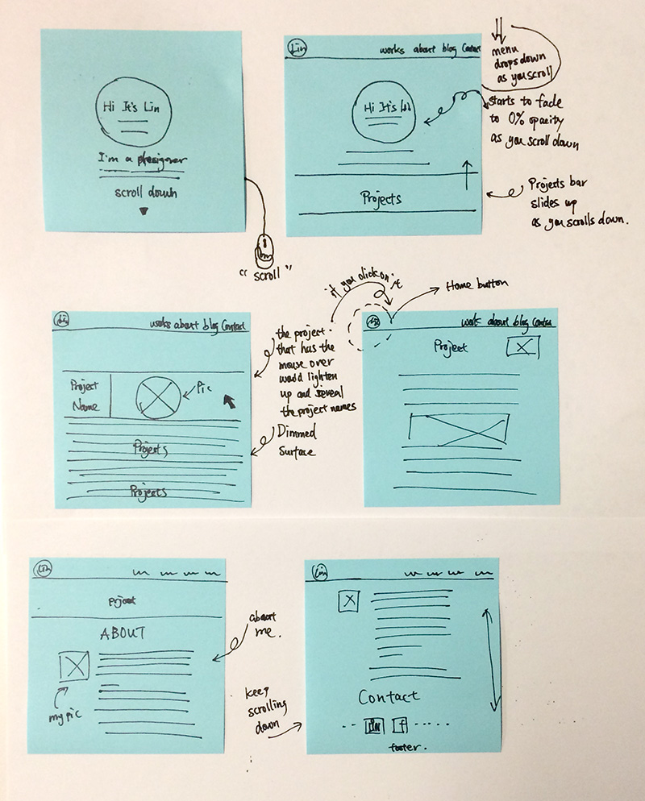
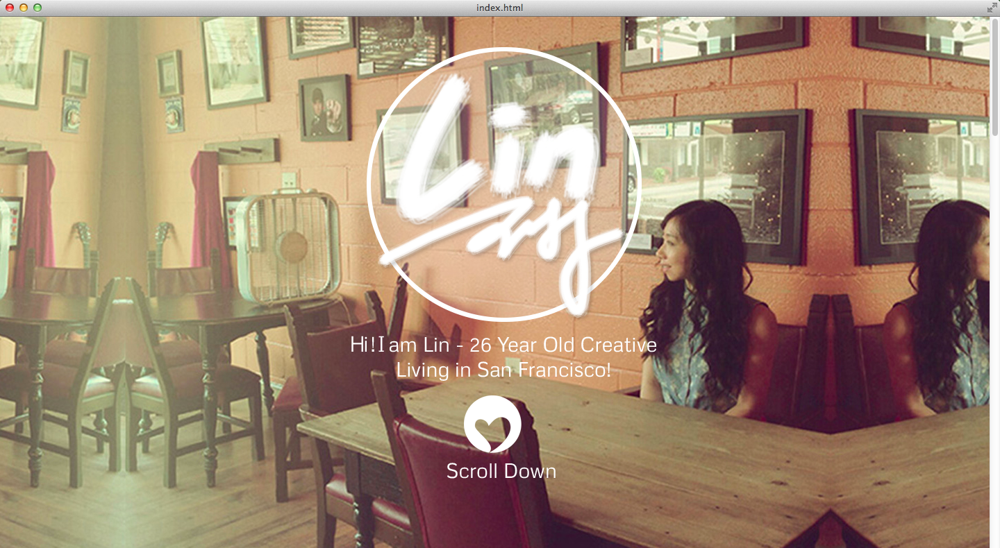
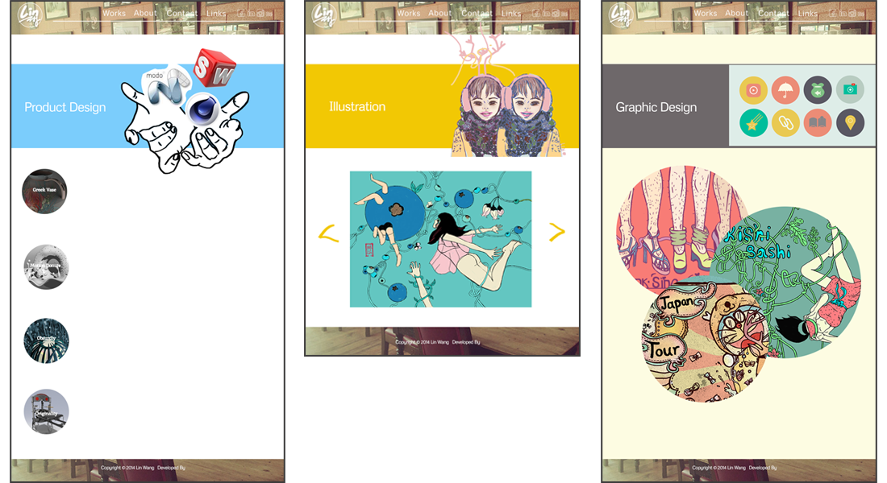
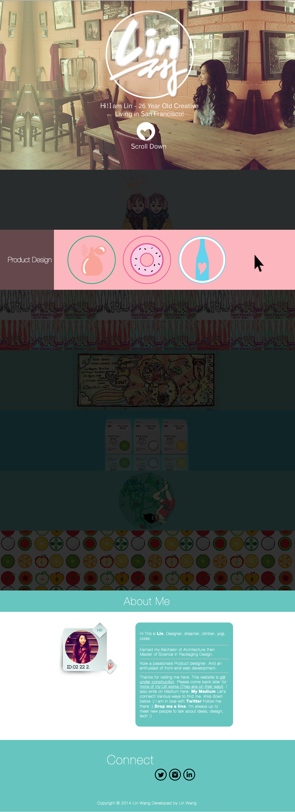

Web Design and Dev - My Visual Portfolio
The video below shows the fun interactions in this design. I will briefly explain how I got there.
Problem
I have done multiple illustrations and visual designs, they are like a hobby to me. But I had no website dedicated to them. To solve this personal problem, I decided to craft a fun visual design portfolio for myself.
Project
This is a mini project I hacked over 1 week for myself.
The goal here is to showcase my visual designs in a fun interactive way. I want it to be easy to interact and fun to play around with. I also want it to to look beautiful on top of that.
I designed and developed this website from scratch using HTML & CSS, and a bit jQuery. The projects listed in this webiste design are all my previous works.
Site map
To guide myself through the design process, and keep me focused. I made this site-map. It includes the items I want to have on my website.
To help myself understand the current visual portfolio situations, I researched portfolio designs on the Internet. This is the initial sketch afterwards.
I want it to be different from other portfolio sites but I also want to keep it simple and easy to understand. I still want my visitors to focus on my work and I want them to have an easy time navigating around the site.

Based on the content and what I want to achieve, I did a few low-fi designs, then got quick feedbacks from my friends. I decided on this design shown below. The sketches demonstrate how the "fun" in my design works. After I released it, many of my friends told me they did have fun playing around on my website.
Website
Below is my landing page. I made it very "visual" so that people who visit get an instant idea that this is a visual design portfolio.
I had some ideas of presenting my projects on each page. Below are some of them.
I finally decided to go with a simpler, more straight-forward design as shown below. This design is more consistent and easier for users to understand.
